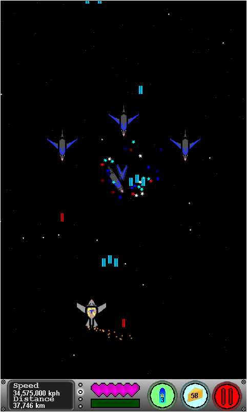
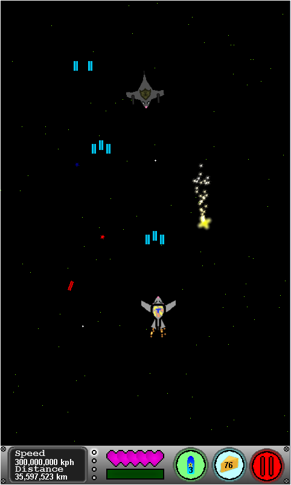
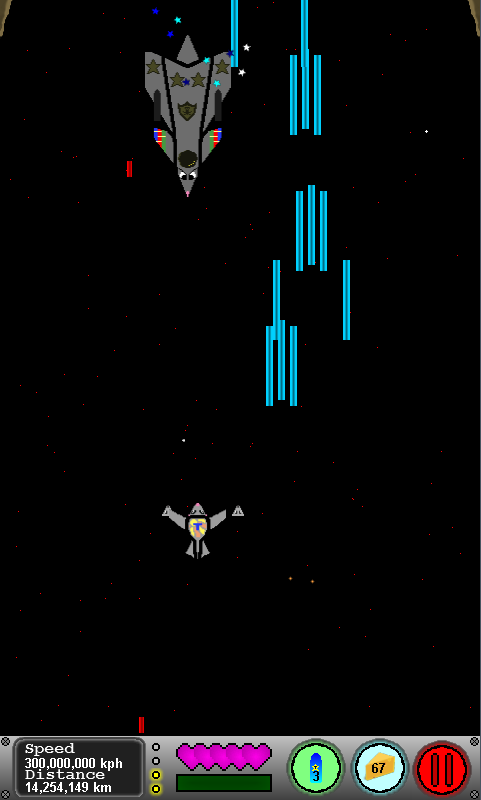

|
 |
|  |  |  |
 |
{kind=link}
{kind=link}
{kind=link}
| Made
in: Game Maker |
Designed for: Mobile | Genre: Verticle Shooter |
|
StarratS is a game that I developed and released over a period of 3 months. Development on the game was done as a mostly independently, with the only assistance being from a friend who provided some artwork for the enemies, friends who did some testing and a voice artist on the lead character. Things that I am most proud of however are small details to make the game more realistic. For the attack pattern of the enemy ships I referenced real world flight formations to create a variety in how they spawn. Throughout the game you can collect stars to build constellations and when one is complete you get a small story about it. The game also records how far the player character has travelled throughout the gameplay session. Each session is totaled and this is displayed to the player in a diagram of our solar system, to give them a sense of progress. Looking back at it now, I can see areas which could be improved upon. The game has a currency system which can be used to get upgrades, which allow you to progress further in the game. However this also makes the earlier levels to easy and less fun to play, so giving the player the option to skip them would improve the game feel. Plus the gameplay does feel slow overall and enemies should really spawn faster to create a stronger bullet hell experience. |
||